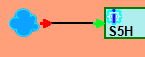
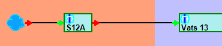
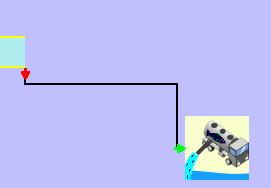
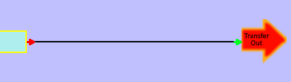
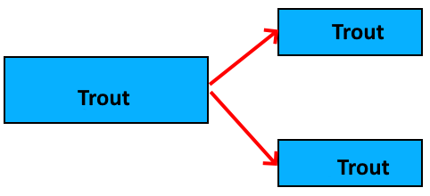
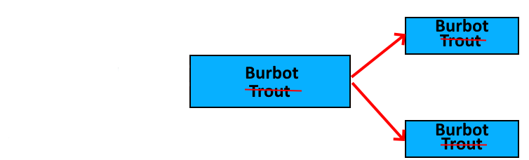
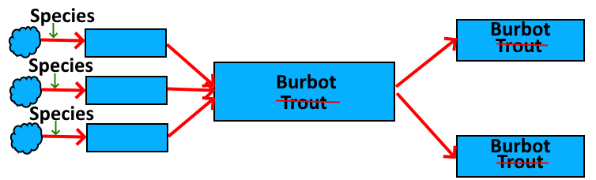
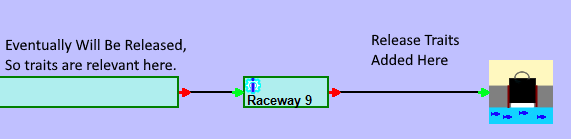
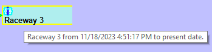
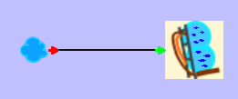

Hatchery Information System
Hatchery data management systems are primarily concerned with recording information about the fish. The most important pieces of information about the fish is where they are located and how many there are at any given time. In addition to these two key pieces of information, there are a large constellation of other information about the fish that can be tracked, but the number and location are central to the organization and functioning of a hatchery data management system.
When a person first looks at a hatchery, they see fish in raceways. This might lead a person to think that the raceway is the unit on which to build a fish management system, but that doesn’t work. The problem is that the number in a raceway will always change over time. To know the number of fish in any location at any given time, it is necessary to know the number that were moved in and the number moved out, up to the time in question. Therefore, any hatchery data management system will start tracking fish moves, rather than fish in raceways.
Since capturing the movement of fish into and out of a rearing unit is the foundation of hatchery data management, hatchery databases will end up with a move table at their core. Move tables all have a few distinct characteristics. They all include a number of fish and a date. Additionally, they all include a source and a destination. These four fields, number, time of move, source and destination, are the characteristic fields that make up a move table. In addition to those four fields, there are likely to be auditing fields. Any fields beyond those probably indicates a particular type of bad design. The rearing units become just endpoints for the moves, while the moves hold all the information. This is the foundation of the Move Web model.
The result of the move tables and the rearing units is that hatchery data will naturally create a web of moves between locations. It is not the fish in the raceways, nor the moves themselves, but the move web that is the data structure underlying all hatchery data. Each rearing cycle in a fish hatchery will consist of one or more move webs. The move web is an amazingly elegant way to track fish hatchery data, or indeed any data similar in character to fish hatchery data.
A move web usually starts when eggs are moved into a location. At that point, the move web consists of a single move and a single location.
In this picture, there is a move from nowhere into a tray. The move from nowhere could represent a spawning event, a transfer of eggs into a facility, or a move from some unknown location that wasn’t recorded. Move webs don’t have to start with eggs, as they could start anywhere, but they all start with a move from nowhere. A move from nowhere is a move from a source that is external to the move web.
Any hatchery that receives eggs will start out with numerous, simple, move webs like the one shown. Eventually, the eggs will either be consolidated with other eggs, or will hatch and be mixed with other fry in some other rearing unit. When this happens, the multiple early move webs all merge into a single move web.
In some hatcheries, all the fish will end up being combined into one pond, at which point all the move webs will merge into one. A hatchery like that might start the cycle with several move webs, but over time they will all merge together until the hatchery has just a single move web that covers the entire rearing cycle. In other hatcheries, fish will remain in different raceways up until release, in which case there may be numerous move webs in the hatchery during any rearing cycle.
Eventually, fish will move out of the move web. Moves out of the move web are called moves to nowhere.
 Moves to nowhere can be releases or transfers to other facilities, but the most numerous move to nowhere is likely to be a mortality move. Since most hatcheries will count mortalities daily, mortality moves are hard to visualize, as there will be so many of them over the course of a rearing cycle. If a distinct move line were drawn for each mortality move, there would be too many lines on the screen to distinguish between them.
In the Hatchery Information System design, move webs are represented by a Move Web object. The Move Web consists of a series of one or more Move Unit objects and zero or more Assemblage Unit objects. The Move Unit object represents a single move, while the Assemblage Unit object represents the fish in a rearing unit. A Move Unit will have a source Assemblage Unit and a destination Assemblage Unit. If the source is nothing, then the move is a move from nowhere, also called a creation move. If the destination is nothing, then the move is a move to nowhere, which might be a transfer out, release, or mortality move. An Assemblage Unit will have a list of moves in, which will contain one or more Move Units, along with a list of moves out, which will contain zero or more Move Units.
Loading a Move Web into the Fish Business Object model can start from any point in the web. If the loading starts with a move, then the Move Unit for that move is loaded, followed by the source and destination Assemblage Units, which then load all their other Move Units, and so on recursively until the entire Move Web has loaded. Similarly, if loading starts with an Assemblage Unit, then the Move Web loads all Move Units that have the Assemblage Unit as either a source or destination, and loading continues recursively with the other end of each move. In this way, Move Webs are the true unit of data in the Hatchery Information System fish management model. Any Move Web can be loaded by knowing just one move or one assemblage of fish. Move Units and Assemblage Units do not stand alone, as loading one will cause the rest of the Move Web to load. This move web design is essential for tracking data for the fish.
In addition to the numbers and location, fish hatchery data management systems will need to track all the rest of the information relevant to the rearing cycle. As it turns out, all measurable aspects of fish can be divided into the two categories, which I call traits and metrics. Traits are labels that, once attached to a group of fish, do not change as long as they are correct. Examples would be species, brood year, release site, marks, and so forth. Metrics are measures of the fish or the environment that change over time. Examples of metrics include growth, mark retention, disease history, and other values that are not directly fish related, such as temperature, water depth, water flow, dissolved oxygen, and so forth.
All trait data is simply and easily managed using move webs. Every trait identified for a group of fish originates at a move. The trait will then flow throughout the Move Web to all relevant parts of the web by following a simple and consistent set of rules. What this means is that all traits, whether they be species, release site temperature, marks, or genetic IDs are effectively the same and behave exactly the same within the move webs that underlie all hatchery data. This may be a bit surprising at first, but it follows the pattern of how data is actually managed in a fish hatchery.
Consider the case where there are some trout in a vat. If, over the course of time, those trout get split out into two raceways for final rearing, they remain trout.
If the hatchery manager notices that the fish in one of those raceway are not trout, but are actually burbot, then something is wrong. The fish didn’t change species, so a mistake was made, but where was it made? The mistake wasn’t made in the raceway where it was discovered. If the fish are now burbot, then they were burbot when they were in the vat, which means that the fish in the other raceway had better be burbot.
The mistake wasn’t made in the vat, either. The fish didn’t become burbot in the vat. They were burbot when they were moved in. Suppose they came from a series of trays, as shown here:
The only place where the mistake was made was when the fish were first moved into the trays. The species was assigned at that point, and only at that point. The reason that the fish were said to be trout in the vat was because it was thought that trout eggs had been put into the trays. The reason that the fish were said to be trout in the raceways was because they were said to be trout when they were in the vat, and that mistaken trait was carried forwards to the raceways. Once the mistake was identified, it is only necessary to go back to the place where the mistake was made, which was the initial move into the trays, and fix it there. The traits of the fish in the vats and the raceways were only wrong because of that initial error. Once the error has been corrected, the traits will flow correctly through the system and all subsequent locations will be correct.
What this means to a fish hatchery data management system is that traits only need to be recorded for the move where they originate. In this example, there is a trait written for each of the creation moves into the trays, but no trait need be written for any other move in the web. In fact, it would be unfortunate to clutter up the database by unnecessarily writing out traits for every move where they are not necessary. Writing traits for every move, not just the move where the trait originates, will add unnecessary size to the database while making correcting any mistakes more difficult and error prone.
Once a Move Web has been loaded by the Fish Business Object, the final step is to get all traits that originate with any moves in the web and flow them upstream and downstream away from the move of origin. The flow of traits follows simple and logical rules regarding how data moves in any such system. The move of origin passes the trait to it’s destination Assemblage Unit. The Assemblage Unit then passes the trait to all Move Units out of the Assemblage Unit that are after the move of origin. This is because, if some group of fish are moved into a rearing unit, then any selection of fish taken from that rearing unit could easily contain some of those fish. Each of the Move Units that receives the trait from the Assemblage Unit then passes the trait on to their destination, and the process repeats.
What may surprise people is that the traits also flow upstream from the move of origin. Consider a group of fish that are released from a raceway into some stream. Those fish now have a release site trait (and possibly several other release related traits). Any fish that were moved into the raceway prior to that release could be part of that release.
The trait originated with the release, but has flowed back upstream so that a person can say that the fish in the vat will end up being released at that site. By flowing the traits back upstream, it makes it possible for the Move Web object to answer the question as to where the fish were released. Also, since the trait is only stored with the release move, there is no additional size to the database for storing this information.
By managing traits in this way, it is possible to ask which traits are present, or will be present, on any set of fish, whether in moves or in rearing units, at any point while they are in the hatchery. Furthermore, an estimate of the number of fish with each trait, or combination of traits, can be obtained along with a rough estimate of the confidence in that number. The Move Web View in Hatchery Information System shows this in the tool tips, which can be changed to show whatever information is desired.
As mentioned earlier, all fish hatchery data consists of traits and metrics. The traits for the fish live within the move web and flow logically from their move of origin following a simple set of rules. Unfortunately, the same can’t be said for metrics. Metrics include several items that affect the fish, yet are not part of the fish in the way that traits are. For example, temperature and flow both affect the fish, yet both exist before a move web starts and after all fish have been moved out of the move web. Other metrics are measures of the fish that change over time, such as weight and length. For this reason, Hatchery Information System handles metrics in a completely different way from how it handles fish traits. Metrics are not a part of the Fish Business Object model at all, but metrics do interact with the model because a metric value is obtained for a specific time and place, where the place might be a Move Unit, Assemblage Unit, Rearing Unit, or other location.
Originally, I thought that the simplest move web would be a single move into a single location.
Eventually, I realized that was not the simplest move web. All traits originate with moves. Assemblage Units have no data associated with them. In fact, in the Hatchery Information System database design, the Assemblage Unit table consists of a primary key, a rearing unit ID (to get a display name from), a creation move ID (the first move into the rearing unit), a termination move ID (the last move out that empties the assemblage, if there are no more fish in the assemblage), and some audit fields that are involved in managing the database itself. Furthermore, the creation move is a vestigial field of no particular value, and the termination move is only there because it is more efficient to have it indicate whether there are fish still in the assemblage or not. Neither of those fields are strictly necessary. Take those two out, and the table becomes a PK, a rearing unit ID, and some audit fields. There’s really nothing much to an Assemblage Unit as far as the database is concerned. Therefore, a move web need not have an Assemblage Unit to be complete. The simplest move web is just a single move with neither source nor destination.
So, what is a single move with neither source nor destination? It is a stocking record. Many organizations will have stocking records from before they were tracking data about the rearing cycle in the hatchery. All stocking records are move webs, and can be managed in the Hatchery Information System design. They look like this
In this move web, it isn’t known where the fish came from, but it is known where they were released, and all the rest of the information about the fish from the stocking record become traits tied to the move. In this way, a design like that used by the Hatchery Information System can consolidate all manner of existing hatchery information from existing databases, though there would likely be a fair amount of transformation needed.
One final point to note is that the move webs and the flow of traits through the move webs is not unique to fish hatcheries, but is found in numerous other situations that share the characteristics of a fish hatchery. The characteristics where the move web design will work are any place where a group of items is in a container, but the items are not individually identified. For example, the design would work for an aquarium, a research lab, or a chicken hatchery, but would not work well for a dairy where each cow has an individual ID. It is not necessary that the numbers in the containers are well known, though they can be. The move web design does what it can with the numbers it has, while adjusting as better information is obtained, but the numbers can remain fuzzy throughout, as they tend to be with fish hatcheries.